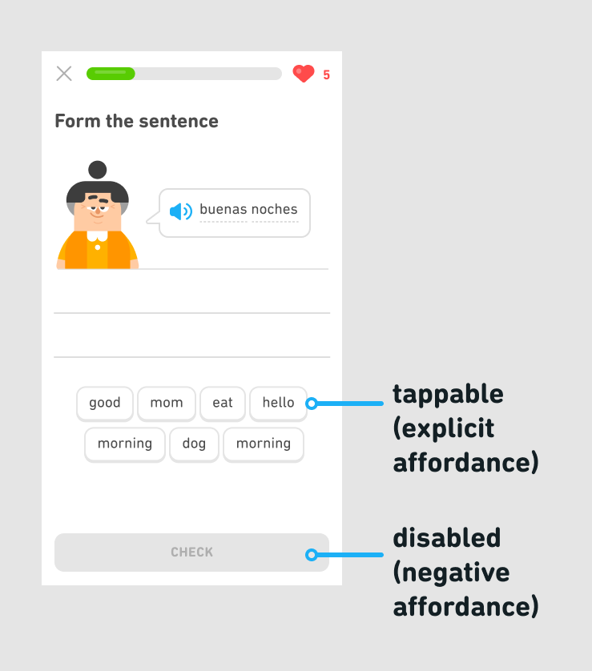

One way to make things easy to use is through the careful use of affordances. Affordances are the ways in which an object or system can be used. For example, buttons in our UI imitate real-life buttons and afford being tapped. This is called an explicit affordance, as the way to interact with this UI element is made obvious or clear to users.
Conversely, when we want to convey that a button is not tappable, we remove the button shadow and gray it out. This is called a negative affordance. Negative affordances make it difficult or impossible for users to interact with an object or system.
